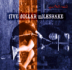

Album: Apartinthemiddle
Track: 1
Useless Information
This is a little ditty about a loser. There's a
reference to an early River Phoenix movie here that
actually refers to a scene with Keifer.
Mass o Tunes
Back home with his V8 engine
Mass o tunes on the radio
Fill the tank and he will drive you crazy
Watch him hide in the shadows of Gordie
Never had the attention he needed
Now he's got some time to figure it out
Don't believe it, please don't feed it, don't be a part of it all
Knockin boxes off the top of their arches
Making babies, then he's leaving the ladies
Just talking 'bout the good times makes him good, so good
Watch me run out of this town
Watch my back buck 'n hit the ground
I'll take you home and drive you crazy